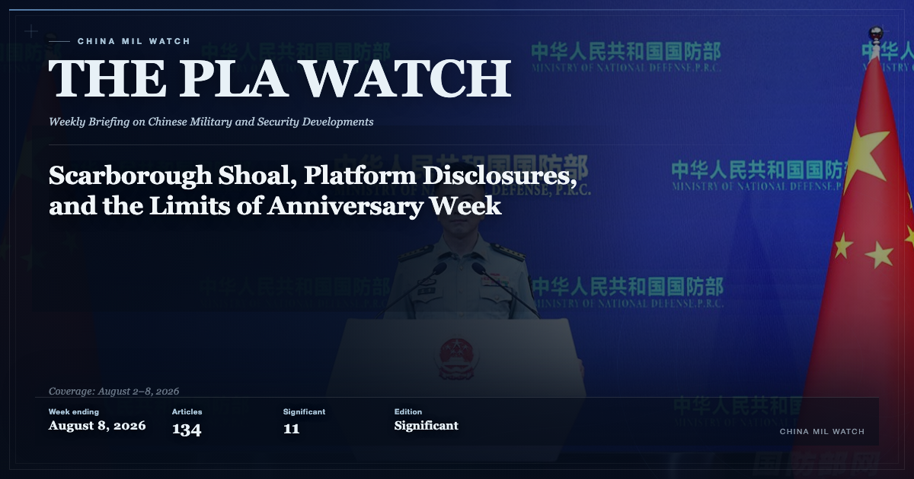

_(cropped).jpg){kind=link}
The Victory Wisdom Contained in These Classic Battle Examples Grows Ever More Relevant with Time
这些经典战例蕴藏的制胜智慧历久弥新
Official defense and security texts, preserved as published and analyzed in context.
IMG · EMPERORNIE · FLICKR · CC BY-SA 2.0
J-20 · CHENGDU AIRCRAFT
CONTEXT, NOT EVIDENCE
Indo-Pacific defense and security record
A record of what defense institutions publish about themselves, preserved as published and read in context.
Indo-Pacific Record keeps the original text, the date, the institution, and a per-run record of whether collection actually worked. Analysis is separate from the record, cites it, and is labeled as interpretation.
IMG · J-20 ·
emperornie ·
CC BY-SA 2.0 ·
Wikimedia Commons
Duotone adaptation · Visual context, not evidence.
Coverage is selective. 1 of 4 declared desks collects today; the rest are labeled by what they actually are on Desks.
As published.
这些经典战例蕴藏的制胜智慧历久弥新
第79集团军某旅“模范第九连”：灵活用兵一脉承
Source record
The PLA Watch · No. 13 · week ending 2026-08-08
The PLA's 99th founding anniversary produced a cluster of capability disclosures and a coordinated exercise response to Philippine legal moves at Huangyan Island, but reading them together requires separating deliberate messaging from institutional routine.
A legacy China Desk series, published under the predecessor masthead China Mil Watch and preserved with its original issue numbers, titles and URLs.

Original PLA Watch edition cover, preserved as published. Its embedded background image was credited to the lead source article.
Every item is stored as its institution published it: original language, original date, original URL, and a content fingerprint taken at capture. English titles and summaries, where they exist, are produced by machine and labeled as such. Nothing in the record asserts that what an institution said is true.
Analysis is written by a person, cites the records it rests on, and is labeled as interpretation. No model writes it and no script derives it from the corpus. An edition is a reading of the week, not a summary of the record.
What this record can and cannot support, how each field is derived, when a value may be absent, and where it stops being reliable — stated once, in one place, rather than implied across pages.
Run 129 executed 4 collectors and recorded 0 execution failures, alongside 1 configured source with no working collector. An empty result has more than one cause and only one of them is healthy, so each source's own outcome is published rather than summarized away.